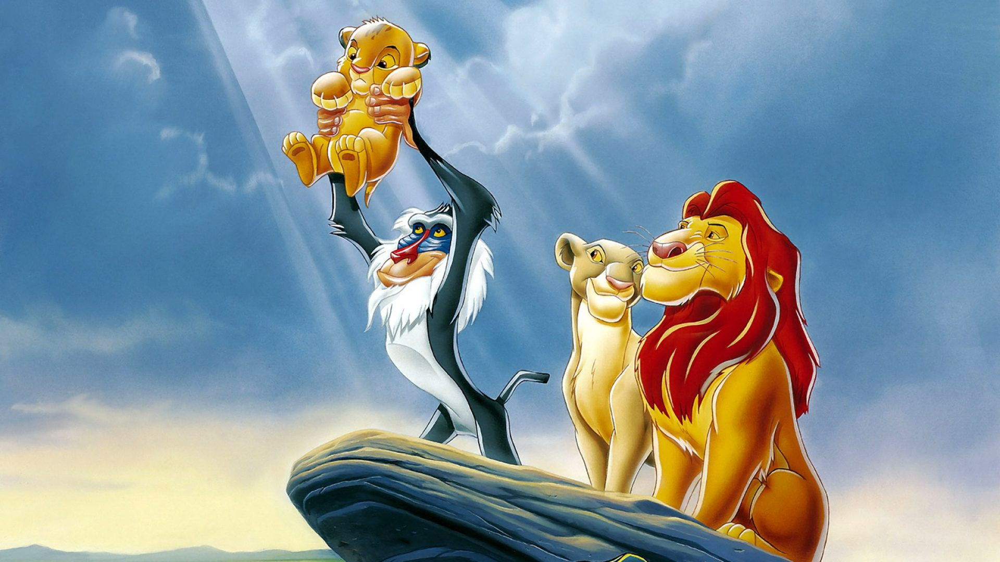

El desarrollo de El rey león empezó al mismo tiempo que el de Pocahontas, con la mayoría de los animadores de Walt Disney Feature Animation trabajando en esta última, porque pensaban que iba a ser la más exitosa y prestigiosa de las dos. Los guionistas tampoco tenían mucha fe en el proyecto; Chapman, por ejemplo, declaró que originalmente no quería aceptar su trabajo «porque la historia no era muy buena», mientras que el escritor Burny Mattinson le comentó a Joe Ranft que «no sabía quién iba a querer ver este filme». Los animadores principales coincidían con este sentimiento y se mostraban desinteresados en el diseño de animales, pese a que trece de ellos, tanto en California como en Florida, fueron los responsables de crear las personalidades de los protagonistas. Entre estos se encontraban Mark Henn y Ruben A. Aquino a cargo de las versiones juvenil y adulta de Simba; Andreas Deja con Scar; Aaron Blaise y Anthony DeRosa con Nala de joven y adulta; y Tony Fucile para Mufasa. Alrededor de veinte minutos de la película, incluida la secuencia musical de «I Just Can't Wait to Be King», fueron producidos en las instalaciones de Disney-MGM Studios. En total, más de seiscientos artistas, animadores y técnicos contribuyeron en la producción del largometraje. Semanas antes del estreno ocurrió el terremoto de Northridge de 1994, que ocasionó el cierre del estudio y por lo tanto el equipo de animación tuvo que finalizar el trabajo en sus respectivos hogares.
Al igual que ocurriera con Bambi en 1942, se tomó como referencia el comportamiento de los animales en la vida real para el diseño de los personajes. Jim Fowler, un reconocido especialista en fauna silvestre, visitó los estudios en varias ocasiones con algunos leones y otros animales de la sabana para discutir con los animadores su comportamiento y ayudarles en su cometido de crear dibujos apegados a la realidad. Para el diseño de las Pride Lands el equipo visitó el parque nacional de Kenia. Se usaron varias lentes focales para ofrecer una versión diferida de la representación habitual de África que aparece en los documentales —donde se emplean teleobjetivos para capturar a las especies lejanas—, y recurrieron a los estudios conceptuales del artista Hans Bacher para ofrecer un mayor realismo mediante efectos como el lens flare. Las obras de los pintores Charles Marion Russell, Frederic Remington y Maxfield Parrish también influyeron en el diseño del filme. A diferencia de otras producciones animadas, los personajes de El rey león no son antropomorfos, situación que llevó a los animadores a instruirse en el trazo de animales cuadrúpedos. A su vez, optaron por tomas más extensas de los personajes para contribuir al desarrollo de la historia y de los propios personajes.
La animación por computadora ayudó a que los cineastas pudieran exponer su visión con nuevos recursos tecnológicos. Por ejemplo, para la secuencia de la estampida de ñus, se utilizó un software de diseño tridimensional para aumentar la cantidad de animales en escena, y luego agregaron efectos de sombreado plano para emular la animación tradicional. De igual manera esta herramienta permitió la adición de varios trayectos aleatorios para los cientos de ñus, con tal de recrear el movimimento impredecible de la manada. No obstante, a pesar de la innovación y a que contaban con animadores y técnicos especialistas en animación por computadora, esta sola secuencia de escasos dos minutos y medio de duración requirió de dos años para ser terminada. A su vez, el Computer Animation Production System simuló los movimientos de la cámara para ciertas tomas travellings, y ayudó a la producción de efectos de iluminación y coloreado.
